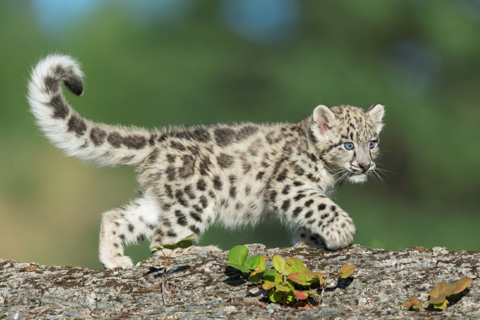
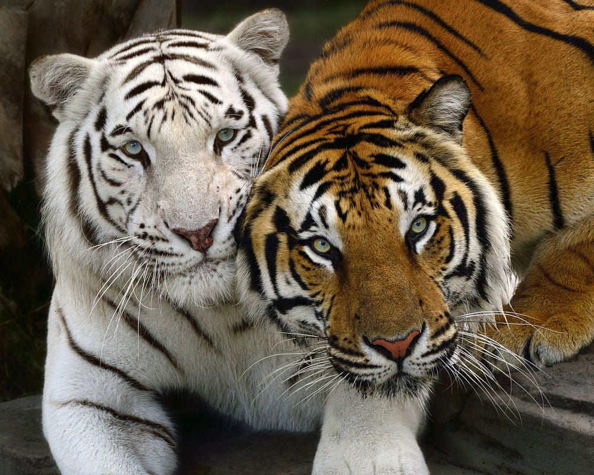

Tijgerpagina
Foto's van tijgers
Links naar andere tijger pagina's


 tijgerpagina 69
tijgerpagina 420
tijgerpagina 69
tijgerpagina 420

Tijgers zijn echte vleeseters! De Amoertijger is de grootste tijger- en kattensoort ter wereld en kan daardoor dieren doden die soms wel twee of drie keer zo zwaar zijn als zichzelf. Een tijger kan dan ook een prooi wegslepen waar wel vijf mensen voor nodig zijn! Hij kan wel veertig kilo vlees in een keer naar binnen werken.
De tijger is een bedreigde diersoort die verspreid over Azië voorkomt. De enorme teruggang in aantal moet worden toegeschreven aan het steeds verder oprukken van de mens. Veel rustige natuurgebieden zijn daardoor verloren gegaan, terwijl de tijger een groot leefgebied nodig heeft. Verder is er steeds minder groot wild voorhanden dat als voedsel kan dienen. Daarnaast wordt de tijger vaak het slachtoffer van stropers, omdat zijn fraaie huid, botten en lichaamsdelen (voor medicijnen) op de zwarte markt veel geld opbrengen.